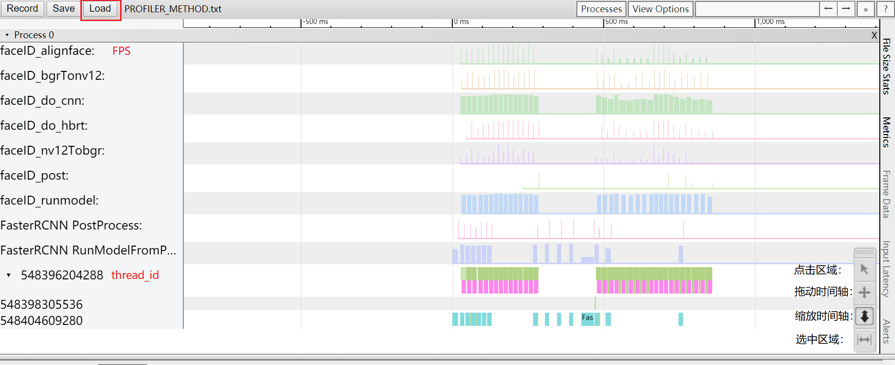
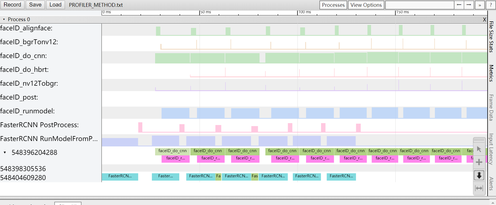

工具集¶
本文介绍AI Express相关工具集，注意：该文档仅仅介绍工具使用方式，不展开将使用教学，可以新搞一个文档链过去，比如：性能profile最佳实践
数据流可视化工具¶
XStream内的数据流是通过配置json文件来生成的，框架内目前已对数据流配置是否有效进行了检查，而此工具可将配置的json文件数据流向图可视化，生成一份自定义格式的文档或图片，以直观的方式展现json文件中的数据流向。
工具位于source/common/xstream/framework/tools/xstream_framework_datashow.py
1. 准备环境：工具通过python3 + graphviz + dot实现，使用前需安装 python3（推荐python3.5.2）、graphviz库、json库
2. 使用工具：
使用该文件的运行格式为：python xstream_framework_datashow.py xxx.json 效果图如下：

3. 可视化后的workflow：
某个node的inputs得不到feed，图中体现为：绿色填充，标签中带有字段：(No-Feed)
全局inputs和全局outputs重名，图中体现为：红色双箭头边相连，边带有字段：same-global-inputs-outputs
某些node间的outputs重名，图中体现为：浅蓝色双箭头边相连，边带有字段：same-node-outputs
性能Profiler工具¶
XStream内部提供了性能统计的工具，用户可以通过XStream的对外接口SetConfig打开或关闭该功能，默认该功能关闭。
配置profiler功能
int SetConfig(const std::string &key, const std::string &value)
key为”profiler”, value为”on”, 表示打开性能统计功能。”off”表示关闭, 默认为关闭。
key为”profiler_file”, value为性能统计输出文件路径，用于设置性能统计文件的路径名称，框架层次的统计数据输出至该文件。
若程序中创建多个XStream SDK，则不同的SDK可以设置不同的配置。
xstream1->SetConfig("profiler", "on"); // 设置打开profiler功能
xstream1->SetConfig("profiler_file", "./profiler_1.txt"); // 设置框架层统计数据输出文件
xstream2->SetConfig("profiler", "on"); // 设置打开profiler功能
xstream2->SetConfig("profiler_file", "./profiler_2.txt"); // 设置框架层统计数据输出文件
Method内的统计数据默认输出至文件”PROFILER_METHOD.txt”, 用户若需要更改，可通过访问性能统计的全局单例设置智能策略内的统计数据：Profiler::Get()->SetOutputFile("xx.txt")
性能统计数据类型
目前XStream内支持的性能统计数据包括处理时长（Time）和帧率（FPS）两种。其中函数处理时长的默认统计最小间隔是3000微秒（即3毫秒），若函数处理时间低于3毫秒，则不计入统计范围；帧率的默认统计最小间隔是200毫秒，若统计周期小于200毫秒，则不计入统计。
为了支持不同业务场景的处理耗时不同，目前支持用户对统计粒度的修改。
int SetConfig(const std::string &key, const std::string &value)
key为”profiler_time_interval”, value为整型数据（单位：微秒）, 表示设置函数处理时长的最小间隔。
key为”profiler_fps_interval”, value为整型数据（单位：微秒）, 用于设置帧率的最小间隔。
xstream1->SetConfig("profiler_time_interval", "1000"); // 设置函数处理时长的最小间隔为1毫秒
性能统计数据可视化
用户打开性能统计后，若统计结果输出到文件”profiler.txt”，可以通过访问chrome://tracing/，通过页面的Load按钮将文件加载，即可看到统计数据可视化界面。以下图为例，页面上的横坐标表示”时间”；前几行(标志是字母)的纵坐标表示对应Method处理的帧率；后几行(标志是数字)的纵坐标表示不同线程”thread_id”，同时页面左下角提供了缩放、拖动等工具以便用户查看数据细节。

使用缩放工具缩放坐标，可以查看数据细节，不同的函数执行时间以不同颜色标志，并标记函数处理类型，如下图： 
Python API¶
在XStream/XProto的C++版本外，发布包中提供了简单的XStream/XProto Python API。您可以使用Python API更方便地构建和运行workflow。
环境搭建¶
搭建Python环境¶
目前，地平线提供的开发板上还不包含Python环境。AI-Express为用户提供了可以运行在地平线开发板上的简单Python3.6环境。
您可以将压缩包解压至开发板/userdata路径下，之后在开发板/bin路径下创建软链接以使用。
ln -s /userdata/python3/bin/python3.6 /bin/python3
添加动态库和xstream/xproto包到Python搜索路径¶
XStream/XProto Python API中，除Python脚本，还包含以动态库形式存在的对C++版本的封装。这些封装库依赖于C++版本编译出的动态库。您需要将封装动态库添加到Python搜索路径，并设置环境变量以识别C++版本库。在release包中，封装库位于common/xstream/python_api/package/lib/和common/xproto/python_api/package/lib/下。在部署包中，封装库和C++版本库位于lib下。
运行Python脚本前，您需要设置LD_LIBRARY_PATH环境变量：
export LD_LIBRARY_PATH=$LD_LIBRARY_PATH:path/to/shared/libraries
在Python脚本中，您需要添加动态库到Python搜索路径：
import sys
sys.path.append("path/to/shared/libraries")
xstream/xproto包位于common/xstream/python_api/package/xstream和common/xproto/python_api/package/xproto下。
运行Python脚本前，您需要将它们添加到Python搜索路径下：
import sys
sys.path.append("path/to/xstream/xproto/packages")
运行测试脚本¶
XStream/XProto Python API的测试脚本位于common/xstream/python_api/package/tests和common/xproto/python_api/package/tests下
test_xstream1.py展示了如何创建一个简单的Workflow。
test_xstream2.py展示了如何创建含子Workflow的Workflow。
test_session.py展示了如何创建并运行一个Workflow。
test_async.py展示了如何在异步模式下使用XProto Plugin获取图像数据并进行推理。
当您在开发板上设置好Python环境，动态库/包搜索路径后。可以将测试脚本复制到部署包根目录下运行，进行功能验证。相关输出将在命令行中显示。
XStream Python API¶
XStream Python API是地平线基于XStream-Framework推出的Python语言的开发库，它让用户可以方便快速地通过Python去使用XStream-Framework来实现智能策略。它是XStream-Framework的一个Python前端，可以通过Python定义XStream-Framework支持的Workflow，并基于Workflow进行同步或异步推理等。
接口描述¶
目前xstream包中提供了Method，Variable，Session类和一些全局函数。Method，Variable类主要用于构建Workflow。Session类会在运行Workflow时使用。
Method类¶
__init__(type)
创建一个Method对象
参数
type: 要创建的Method类型. Method类型一旦指定后就不可修改.
返回值
Method对象
inputs(value=None)
设置或返回当前Method的输入数据名字列表.
参数
value: 字符串列表类型或者None.
返回值
当
value为None时 : 当前Method的输入参数名字列表.当
value为字符串列表时 : 当前Method对象.
outputs(value=None)
设置或返回当前Method的输出数据名字列表.
参数
value: 字符串列表类型或者None.
返回值
当
value为None时 : 当前Method的输出参数名字列表.当
value为字符串列表时 : 当前Method对象.
method_type()
返回当前Method的类型.
参数
无.
返回值
字符串 : 当前Method类型.
config_file(value=None)
设置或返回当前Method的配置文件路径.
参数
value: 字符串类型或者None.
返回值
当
value为None时 : 当前Method的配置文件路径.当
value为字符串类型时 : 当前Method对象.
config(value=None)
设置或返回当前Method的配置参数.
参数
value: 字典类型或者None.
返回值
当
value为None时 : 当前Method的配置.当
value为字典类型时 : 当前Method对象.
thread_count(value=None)
设置或返回当前Method的最大线程个数.
参数
value: 整数类型或者None.
返回值
当
value为None时 : 当前Method的最大线程数.当
value为整数类型时 : 当前Method对象.
thread_list(value=None)
设置或返回当前Method的线程ID列表.
参数
value: 整数列表类型或者None.
返回值
当
value为None时 : 当前Method的线程ID列表.当
value为整数列表类型时 : 当前Method对象.
__call__(*inputs,**attrs)
调用当前method对象, 每次调用代表着在workflow中创建一个节点. 同时在调用时支持覆盖声明Method对象时指定的预定义参数.
参数
inputs: 当前的Method的输入.attrs: keywords arguments, 用来覆盖Method预定义参数. 支持下列参数:Inputs : 输入参数名字列表
Outputs : 输出参数名字列表
UniqueName : 当前Node的唯一名字
ConfigFile : 配置文件路径
Config : 配置参数
ThreadCount : 线程最大个数
ThreadList : 线程ID列表
返回值
当
value为None时 : 当前Method的线程ID列表.当
value为整数列表类型时 : 当前Method对象.
Demo
import xstream # 预定义该method使用test_cnn.json这个配置文件 method_a = xstream.Method("CNN").config_file("test_cnn.json") # 覆盖预定义的ConfigFile配置 output = method_a(inputs, config_file="test_cnn_2.json")
Variable类¶
__init__(dataName)
实例化一个Variable类型的对象.Variable对象作为workflow的输入和输出数据类型.
参数
dataName: Variable的数据名称.
返回值
Variable对象
name()
返回当前Variable的名字.
参数
无
返回值
字符串 : 该Variable对象的名字.
Session类¶
__init__(workflow， *inputs, method_factory=[default_factory])
实例化一个Session对象。
参数
workflow：定义Workflow的python函数对象。
inputs：可选参数。该workflow的输入参数。Variable类型。
method_factory：可选参数。定义Workflow中使用到的Method的实现。
Note 参数用法参考Serialize函数。
返回值
Session对象。
callback(cb, node_name=””)
设置Workflow的回调函数。
参数
cb：python函数，参数和Node或者Workflow的输出参数对应。作为workflow回调的参数列表中会追加forward的opaque参数传入。参考forward方法参数。
node_name：节点的unique name。留空代表设置workflow的最终输出。
Note workflow的输出回调函数的参数将会在后面追加一个opaque，而node的
返回值
整数：0 成功，非零 失败
forward(**datas, opaqua=None)
执行异步predic。
参数
datas：输入到workflow的数据。keywords 形式的参数。
opaque：这次输入绑定的上下文信息。会在workflow的最终输出的回调函数中，作为最后一个参数传入。任意类型，XStream内部不会访问。参考callback方法定义。
返回值
整数 0成功，非零失败
close() 关闭Session，释放相关资源。
参数
无
返回值
无
全局函数¶
serialize(workflow, *inputs)
该函数用来将一个python定义的workflow转换成XStream框架所能识别的Json格式的配置字符串.
参数
workflow: 定义workflow的python函数对象.inputs: 该workflow的输入参数.Variable类型.
Note 当一个workflow函数的参数名字与该workflow的输入数据名字相同时,
inputs参数可以省略.
返回值
XStream框架支持的workflow json字符串
scope(name)
该函数创建一个新的名字空间, 在该名字空间下, 所有workflow中定义/生成的Method, Variable的名字都会加上name前缀.
当有多级Scope生效时, 各级Scope的name会级联.
参数
name: 当前scope的名字.
返回值
Scope对象
Note 该函数要和Python中的
with关键字一起使用.
构建Workflow¶
XStream中Workflow是通过Json配置文件来描述的。当一个Workflow变得复杂时，Json配置文件会变得冗长，增加维护的困难性。体现在如下几个方面：
串联各个节点的输入和输出名字需要手动填写，容易出错或者造成命名冲突。
各个节点的顺序关系要保证，对于不熟悉的开发者来说，需要花时间去梳理Node的逻辑关系之后才能添加新的Node。
无法快速的发现并去除冗余路径上面的节点。
图可能出现环路。
实践中发现，构建Workflow的过程其实和编程类似。Json在这个地方就是起到了编程语言的作用。与其发明一种新的语言，就不如使用Python语言来实现快速构建Workflow，并解决上面的问题。
Workflow在Xstream Python API中是以函数的形式存在的。函数的参数就是Workflow的输入，返回值是这个Workflow的输出。各个Node之间的组织关系就是Python中对Node的调用。通过这种方式可以快速的描述Node之间的组织关系。
import xstream as xs
bbox_filter_method = xs.Method("BBoxFilter").inputs(["in_bbox"]).outputs(["bbox_filtered_A"])
bbox_filter_method.config_file("a_filter.json")
def my_workflow(in_bbox):
bbox_filtered_A = bbox_filter_method(in_bbox)
bbox_filtered_B = bbox_filter_method(in_bbox).outputs(["bbox_filtered_B"]).config_file("b_filter.json")
return bbox_filtered_A, bbox_filtered_B
上述代码示例定义了包含两个Node的Workflow。
首先，要创建Workflow中的Node。示例中创建了使用BBoxFilteredMethod的Node。它接收检测框作为输入，输出过滤后的检测框。
然后，就可以将Node串联起来，已函数的形式表示Workflow。
示例中的in_bbox, bbox_filtered_A等只是一个名字占位符，在将workflow加载到XStream-Framework框架中后，会有实际的数据与之对应。
上述示例会构建如下Workflow：
运行Workflow¶
构建Workflow后，可以通过Session类运行它。
import xstream as xs
import vision_type as vt
import time
# 使用上一节创建的Workflow
session = xs.Session(my_workflow)
# Workflow回调函数
def flowcb(bbox1, bbox2, opaque):
print(bbox1.state)
print(bbox2.state)
vt.bbox_dump(bbox1)
vt.bbox_dump(bbox2)
session.callback(flowcb)
for idx in range(100):
session.forward(in_bbox=vt.bbox(0, 20, idx, 50))
time.sleep(0.01)
session.close()
上述代码示例中首先创建了一个Session对象。创建该对象时需要传入表示Workflow的函数。XStream包内部会调用serialize方法，将Workflow保存为Json文件，并创建对应的XStream SDK实例。
之后，调用Session类的callback接口，指定Workflow的回调函数。随后调用Session类的forward接口，输入数据到XStream-Framework进行推理。
上述代码示例将循环100次，输入检测框，打印过滤后的框信息。
XProto Python API¶
XProto Python API是地平线基于XProto-Framework推出的Python语言的开发库。它让用户可以方便地通过Python去使用XProto-Framework中的组件，快速搭建智能应用、验证算法效果。目前XProto Python API仅支持对原生Plugin的调度。XProto Python API需要和XStream Python API配合使用，以实现运行算法/策略的目的。
接口描述¶
目前xproto包中提供了VioPlugin, SmartPlugin类。VioPlugin类完成对VioPlugin的C++实现的调度，处理图像输入数据。SmartPlugin类内部调用XStream Python API接口，运行算法模型和策略。
VioPlugin类¶
init(platform, sensor=”default”, vio_type=”single_cam”, data_source=”default”, **kwargs)
创建VioPlugin实例
参数
platform: 程序运行的平台，目前支持”x3dev”
sensor: 使用的sensor，目前支持”default”(X2平台自带的sensor)，”imx327”
vio_type: vio类型，仅在X3平台下使用。目前支持”single_cam”
data_source: 回灌模式下使用的数据源，目前支持”cache”, “jpg”, “nv12”
**kwargs: 其他参数，留用
返回值
VioPlugin实例
start(sync_mode=”False”)
启动VioPlugin
参数
sync_mode: 是否设置VioPlugin为同步模式
返回值
0：成功，<0：错误码
stop() 停止VioPlugin
参数
无
返回值
0：成功，<0：错误码
message_type()
返回VioPlugin产生的消息的类型
参数
无
返回值
消息类型列表
bind(msg_type, msg_cb=None)
绑定VioPlugin需要使用的消息并指定回调函数
参数
msg_type：消息类型
msg_cb: 消息对应的回调函数
返回值
无
get_image()
同步模式下获取输入数据
参数
无
返回值
输入数据列表
get_name_list()
返回回灌图像列表
参数
无
返回值
回灌图像列表
SmartPlugin类¶
init(workflow, callback, serialize, push_result=False)
创建SmartPlugin实例
参数
workflow: 表示workflow的函数
callback：workflow回调函数
serialize: 智能数据序列化函数，目前暂不支持使用
push_result: 是否向XProto-Framework总线推数据，目前暂不支持推数据
返回值
SmartPlugin实例
start()
启动SmartPlugin实例
参数
无
返回值
无
stop()
停止SmartPlugin实例
参数
无
返回值
无
bind(msg_type, msg_cb)
绑定SmartPlugin需要使用的消息和回调函数
参数
msg_type: 消息类型
msg_cb: 消息对应的回调函数
返回值
无
feed(inputs)
同步模式下接收输入并做推理
参数
inputs: 输入数据，字典格式。key：输入数据名，value：输入数据
返回值
无
message_type()
返回SmartPlugin产生的消息的类型
参数
无
返回值
消息类型列表
使用示例¶
您可以使用VioPlugin获取图像输入，之后使用SmartPlugin来运行算法模型或策略。为了实现运行算法模型和策略，XProto Python API需要和XStream Python API配合使用。
VioPlugin获取图像数据分为同步模式和异步模式。同步模式下VioPlugin不向总线推数据。您可以通过调用SmartPlugin的Feed接口，使用经VioPlugin处理的图像数据。异步模式下，VioPlugin会向总线推数据。您需要使用SmartPlugin监听消息。
同步模式
import xproto as xp
# 创建VioPlugin，SmartPlugin
vio = xp.VioPlugin("x3dev", "hg", "single_feedback", "jpg")
smart = xp.SmartPlugin(my_workflow, smart_data_cb)
# 以同步模式启动VioPlugin
vio.start(True)
with open(vio.get_name_list()) as in_file:
lines = (line.rstrip() for line in in_file)
lines = list(line for line in lines if line)
processed = 0
while processed < len(lines):
# 获取图像并进行推理
image = vio.get_image()
smart.feed(image)
processed += 1
time.sleep(1)
vio.stop()
smart.stop()
上述示例展示了使用VioPlugin同步模式进行回灌。
首先创建了VioPlugin和SmartPlugin实例。之后启动VioPlugin，同步模式下需要指定sync_mode为True。然后，通过VioPlugin的get_image接口获取VioPlugin处理的图像数据，并通过SmartPlugin的feed接口将图像数据输入到XStream Workflow进行推理。
异步模式
import xproto as xp
# 创建插件
vio = xp.VioPlugin("x3dev", "imx327")
smart = xp.SmartPlugin(my_workflow, smart_data_cb)
# SmartPlugin监听VioPlugin产生的消息
smart.bind(vio.get_message_type()[0])
# 启动Plugins
vio.start()
smart.start()
time.sleep(1)
vio.stop()
smart.stop()
上述示例展示了以VioPlugin异步模式使用sensor图像。
相似地，需要先创建VioPlugin和SmartPlugin实例。对于SmartPlugin，需要绑定VioPlugin产生的消息以监听并使用它。之后，只需要启动和停止plugin即可。